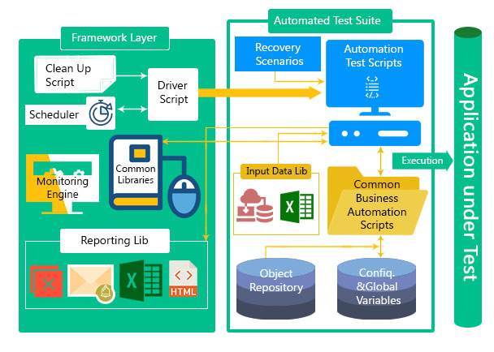
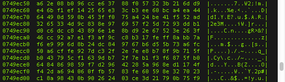
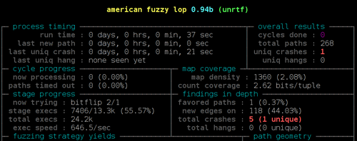
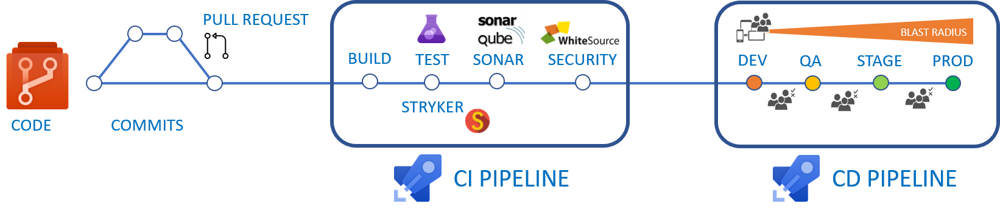

SQA Automation Engineer
pre-interview survey
1. Quality Assurance studies, certification, trainings
Do you have any SQA / DevOps / SecDevOps / AQA education or certification?
List all available formal proofs-of-expertize
that you have received from industry-respected 3rd-parties.

2. SQA theory basics
Suppose you have to evaluate connection stability
between a phone and a wearable device.
How would you implement a. load testing b. stress testing?
Which metrics would you use? How will you process statistical data?

3. Embedded devices SQA automation experience
There is a target phone that is used in exclusive mode remotely
(no parallel test execution is possible).
How would you organize automated concurrent testing?

4. Containers / emulators / simulators
What is your expertize with Docker, QEMU, XeN, GEM5, Singularity?
Give scenarios where you would prefer:
- virtualization
- containerization
- emulation
Give examples from your commercial experience.

5. Linux permissions (DAC, MAC)
A shared folder /home/share is needed for a group of engineers.
Inconvenience is that just giving group permissions is not enough:
by default the one who creates a sub-folder becomes the owner,
then anybody else can neither access nor delete this new sub-folder.
Suggest how to configure Linux permissions in a way to fix it.

6. Bash and Linux utilities
Daily routine with embedded devices test automation
requires bash and Linux utilities such as:
grep, nc, wget, curl, jq, sed, awk, tr, sshfs, mount, dd, df, du
An automatic sub-domains extraction is needed from httpS certificates.
Write bash script that:
- takes a domain as an input
- sends a request to https://crt.sh to retrieve its certificate
- produces a list of sub-domains found in the certificate
EXPORT target="some.domain.com"
curl -s "https://crt.sh/?q=${TARGET}&output=json"
7. Root cause localization
Have you ever worked with memory dumps,
debugging utilities or disassemblers, memory analysis tools?
TV gets into frozen state randomly. You suspect a concurrency issue.
- How will you localize the root cause?
- How to automate the detection of such issues at various SLDC phases?

8. Test Automation
Describe your experience with static / dynamic analysis tools.

9. Experience with CI/CD
Biometric authentication component
is integrated with Android BiometricManager.
(there is no UI, phone is the target device, access via API)
Describe how would you build CI/CD pipeline for this case.

10. Please evaluate your expertise in a number of tech. domains.
This will help to adjust expectations, interview questions, salary rates.
3. Describe nuances of using static keyword.
Which type of memory is used for storing such variables?
Which best practices or typical situations do you know where static keyword helps?
a.h
static int a1;
b.c
#include "a.h"
int f()
{
a1 = 1;
}